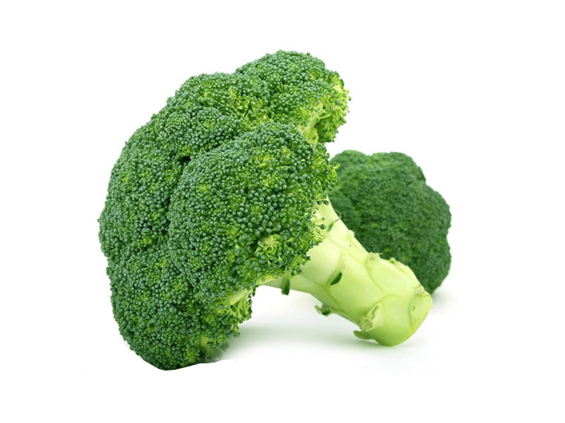

Súp lơ xanh
Súp lơ xanh còn gọi là bông cải xanh, nó thuộc loài cải bắp dại, có hoa lớn ở đầu và được sử dụng làm rau. Nó rất tốt cho sức khỏe, chúng chứa nhiều vitamin A, C và E hơn các loại rau củ xanh khác, giúp bổ sung dinh dưỡng và tăng cường sức đề kháng cho cơ thể.
Các nhà nghiên cứu khoa học đã chỉ ra rằng, súp lơ xanh giúp làm giảm nguy cơ mắc bệnh ung thư và nhiều loại bệnh tật khác.
Súp lơ xanh có đặc điểm nột bật khác so với các loại rau khác là bông súp lơ có màu xanh nổi bật. Để đa dạng hơn về rau xanh, bạn có thể tham khảo thêm súp lơ tím để làm tăng thêm hương vị cho các bữa cơm gia đình nhé!
Giá trị dinh dưỡng từ bông cải xanh
* Súp lơ xanh được sử dụng rất nhiều trong các món ăn hàng ngày tạo, bố sung vitamin và và các khoáng chất cho cơ thể. Rau sup sơ được chế biến thành nhiều món ăn ngon khác nhau từ luộc cho đến xào.
* Với thực đơn ăn uống bạn nên bổ sung các món ăn từ súp lơ xanh, để cơ thể bạn được cung cấp đầy đủ dinh dưỡng và giúp bạn đẩy lùi được nhiều bệnh tốt cho sức khỏe.